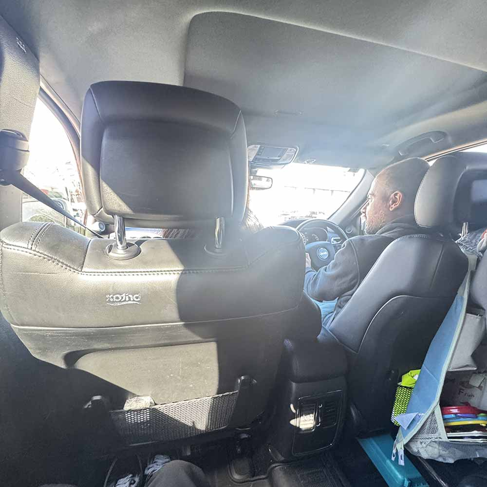
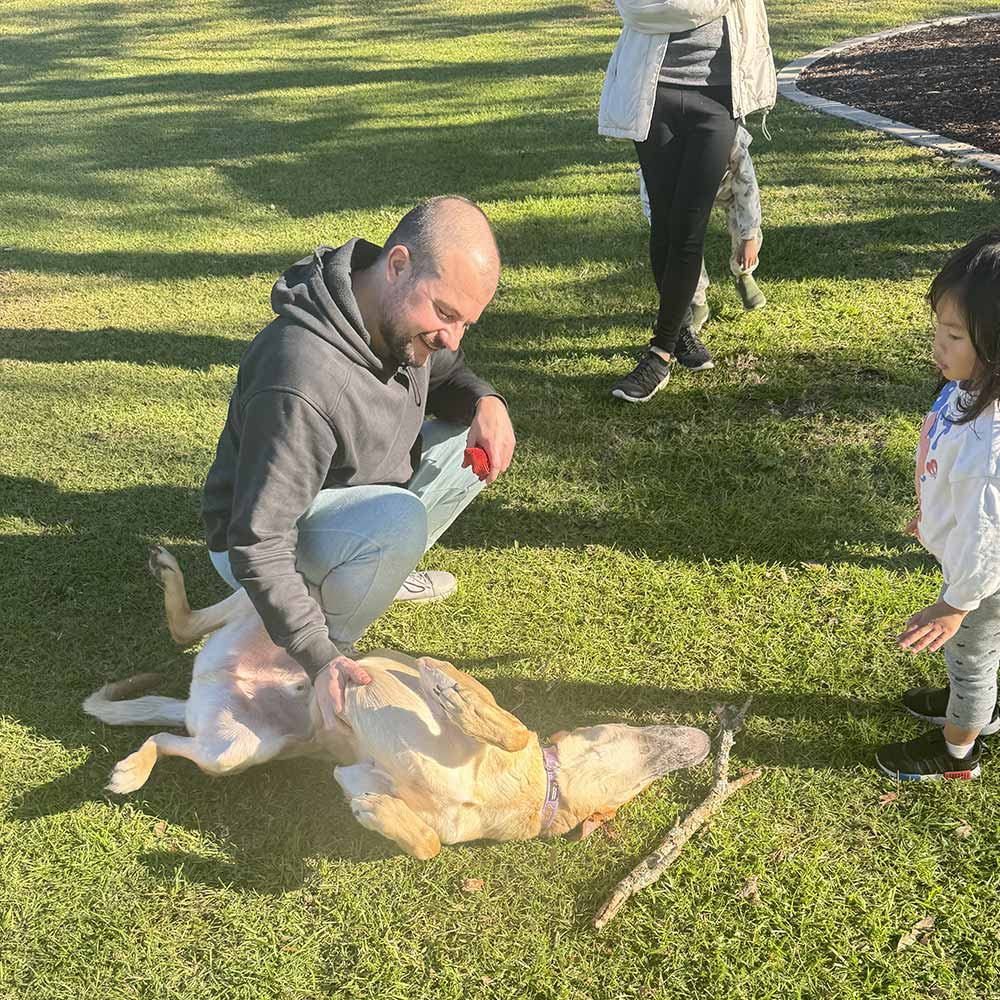

I avoided writing for weeks because I didn’t want to write further out of my emotions - as seen from my last post (See 30/05/25). Anyway, I had a few stuff I wrote-up over the last few weeks but I never quite finished them. June’s a very tumultuous month for me, and maybe a bit transformative.
Throughout the month, I constantly find myself on the brink of financial collapse: only making just enough to pay the necessities. I lost a vital client, but I honestly find myself quite relieved as working with them was very dissatisfactory. But at the same time, I have added work for my mentor. He bought these two businesses in Sydney and have tasked me and two of his chefs to work on it. I’ll get more to this later.
To pick-up where I left off, my last note was sort of a reflection on my journey of courage. Albeit not fully-described, I wrote about my courage of taking risks: moving to a new country, putting myself out there and talking to people, and falling in-love even though it was never really reciprocated.
That note was posted on the last day of my first visa and I was under a lot of stress. I had some doubts about my visa, I pondered going home - if it was ever still worth it.
I almost did.
I figured out almost everything at the last minute. I got a temporary visa until the new one gets granted (if it does) and I’m still here.
I wrestled with my heart and mind over making that decision if you read through it. I wrestled with my heart’s empathy and yearning with my mind’s rationality. I had already followed my heart over my decision to go home last February. This time, I didn’t let it overcome me. What’s waiting for me at home is just more pain and suffering. I don’t want to go back.
In the end, I chose myself. Now, I find myself at a crossroad. I find myself on the verge of finally loving and hoping for the future again - the same feeling I had last August while I was in Rouse Hill.
For context, read through my first note on Kirby. Just last month, my mentors had told me that they are planning to go to China again. I got this confirmation just last week. They’ll be off on 12 July until 26 October - a little bit longer than last time.
This was when I feel like the clouds over my head started to subside: I was starting to love and hope again for the future. I’ll be with Kirby again, I’ll live by myself in a nice house again, and I won’t have to worry about any visas or finances at least for the next few months.
I visited them just a few days ago to meet with the two chefs I’ll be working with. They moved from their small Rouse Hill Apartment to a larger duplex home in Castle Hill. I was on the way to their home when my mentor messaged me that they are in the Castle Towers Mall near their home. The bus stops there luckily so I went off there. We met at a popular Japanese Food Chain called Motto Motto. I had always see this restaurant chain all around Australia but never really tried it somehow. Anyway, they bought me a Fried Tofu Ramen and Tempura Prawns. They were actually surprisingly delicious! Petko was sitting opposite me playing with his daughter, Raya. Raya had grown really big already. She was walking by herself and can already say some words. Sukey, his wife, came back and sat beside Raya.
We finished eating. We eventually decided to pick up Kirby from the house then drive to the dog park and playground to walk around. Sukey and I talked just chatting about what’s been happening to me. Petko was carrying Raya ahead of us. Petko was super fast and we keep on losing him. It didn’t help that it was Sunday and all of the families were at the mall. Funnily enough, this reminded me of something and I asked Sukey: “Do you find it hard to match Petko’s pace?” Sukey said, “Petko’s just very goal-oriented. His mind works constantly and always on the move to do the next thing.” Yeah, I’ll realize this even further later on.

One thing Sukey told me last year was: “Consider us your parents in Australia.” This was probably one of the most thoughtful things anyone had said to me and as I reflect on this, I became really grateful. I had always pitied myself for not being entitled to have siblings nor a dad growing up. There was a point where I yearned to get a wife and a kid just so I’ll know what it feels like to have a complete family. Now, just for this brief moment, I feel like I get to experience and know what that feels. Their family and love was so healthy. I said in a previous note that I’m grateful for them for teaching my a type of love I never would have realized through my family or anyone else in the Philippines. This was one of those moment.
We got into the car, drove to the house. Sukey went off and dropped some bags and picked-up Kirby. Here is where Petko’s mind starts to work wildly. Just as Sukey hops in her seat, Petko started flooring it: her door wasn’t even closed yet! Petko said, “It’ll close by itself!” And the ride towards the playground was a literal rollercoaster. Petko kept on turning corners at a really high-speed. There’s also these little pavements on the road where you have to turn slightly right then left to help control speed, and Petko still went through them at high-speeds. He flaunted his new tires and said how fun it was. Me, Kirby, and Sukey were really stressed (but I think Sukey’s more used to it) and Raya was having fun. Anyway, I saw how Petko’s always in a hurry, very goal-oriented, and it can’t be anymore apparent here.

We played around in the dog park. Kirby was running around and we were playing fetch. They took turns playing with Raya on the playground.
There was a moment where Sukey and I were talking. She said she really wishes to see my mom because “I can see your mom’s love through you and I really want to meet her.” Sukey understands my situation: we’re both a single-child, but I grew up with a single-parent. Though her parents are well-off, she understood the sacrifices me and my mom made to get me to Australia. Moreover, she sees all the efforts I make in Australia to make something of myself and had always empathized with me on visa and work struggles, and even having an identity-crisis of being asian people taking on big roles.
I guess that’s one thing I’m grateful for. There is only a very handful of people I can say who understands me better than I do. Sukey’s one of those person. I felt I didn’t have to make a performance or put in the effort to be this perfect person just to satisfy them. That people really do care about who you are and had put in the effort to understand you more deeply than you had realized. We have deep-talks in life despite our cultural differences. Culture and race doesn’t matter just fundamental human values and experiences.
The only other person I feel that to was this friend I had from high school. Three years ago, he had told me “From the moment I met you, I already know you are meant for great things.” I didn’t understand what he meant then, and I don’t have that big of an ego to really believe him. He also said that I was his inspiration to change and do better. All I had in my head was “How?” “Really?” My mom also says some of the same stuff. After all, she’s the first one to believe in me and sold everything just to get me to this country. Nevertheless, in both cases, I was touched. Those are the small moments which I can recall where I felt truly seen.
I don’t know, I guess I’m just touched about being understood differently that I perceive myself. After all, we always ask for a second opinion about anything: why can’t we do the same and find out how other people see ourselves to eliminate the biases put on ourselves?
Anyway, we went back to the house. The two chefs came just after an hour. The first is Chef Patrick Warcholak. A guy in his mid-30s. He spent 4-years in London, moved to Melbourne for 4-years afterwards, then to Sydney just 6-months ago. I liked talking to him because he seems really relatable. Despite being in his mid-30s, he still thinks and acts like in his 20s. The other guy is someone I had a call with back then: Chef Leo Iza. He’s older in his 40s with a young son. He came from Brazil but lives in Australia now. He talks a lot - a bit unstructured which makes it hard to follow. He just keeps speaking his mind. Anyway, we chatted for a bit with Petko. Had dinner afterwards: Chinese Stir Fry Salad, boiled fish, and barbecued Steak. Apparently, how you cut the steak matters. Petko cut it wrong and the taste was sort of mild. Chef Leo cut it properly, and the taste was 10x better!
My sleep schedule’s really weird. I woke up at around 5 to 6am. And usually, by 7 to 8pm, I’m literally knocked-out. I drank wine too so I saw myself out and fell asleep on the couch. Chef Patrick drove me home afterwards.
Anyway, that’s a brief recount of that. More to come in the next few days leading to when I move to their home on 12 July. I looking forward to fall in-love again; not to someone, but in life. To relieve myself of all of the pressures I felt over the last 7 months when I last took care of Kirby. To wake up and go home everyday to Kirby showing me love and affection.
During the first time I took care of Kirby last 2024 of August, I kept on listening to “Tsunami” by NIKI. I thought that I meant it to someone else, but it’s not just that. The song was a reminder for me of the time I fell in-love with life. When I hoped for better things to come, to look forward with what the future has in-store for me.
For a few months, this song will be on-repeat once again.